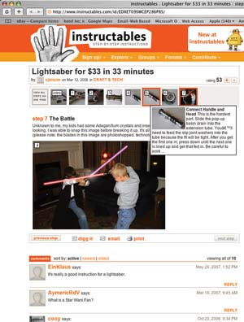
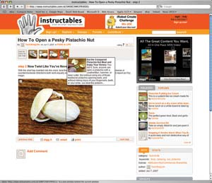

Did you ever want to turn a Pringles can and some CDs into a power source? Make your own Jedi lightsaber? Build an inexpensive screen-printing studio? Learn how to carbonate your own beverages? Or do you have knowledge like this that must be shared with the world? If this sounds interesting, check out Instructables, a Web site where you’ll find hundreds of examples of everyday materials being used in ways you never imagined.
The free step-by-step instructions are easy to decipher and are accompanied by photos, often videos as well. Most of the “how-to” instructions include a materials list and helpful information about where to get the supplies. An impressive and eclectic array of readers reviews each project and offers advice on how to refine it.
One how-to has instructions for making a wind generator from scrap materials. You can also learn how to convert excess attic heat into hot water. Fashion a solar-powered car charger. Make a shredder for leaves that also breaks apart seed heads. Take still photos without a tripod. How about a wheelchair for your dog? You’ll even find great recipes to try, including killer chicken chile verde. Then there’s the “Not Liable” category, which is one of the most fun ways to explore the site. Instructions there will have you building a potato cannon and breathing fire in no time.
Instructables is sponsored by Squid Labs, whose pool of experts has been working on the project for more than five years. The core team collaborates with others who delight in experimentation, from MIT nanoparticle experts to field-trained biologists. The group is rounded out by a team of advisors and a community of experts in everything from robots to food.
You can add your own content, too. Are you a pro at cleaning a mattress or leather, or at knitting, dancing or even flirting? Then Instructables wants you! These are just a few of the skills their team is currently looking for. Find others in the “Burning Questions” section. Plus, you can enter fun contests, such as the “Sew Useful,” “iRobot” or “Fridge Magnet” challenges, all with great prizes. There are numerous tips for non-do-it-yourselfers, and they offer RSS newsfeeds and “Cool Projects” e-newsletters on a variety of topics. Sign-up is free.
|
 INSTRUCTABLES.COM You can build your own lightsaber! (Minus the energy beam, of course.) |
 INSTRUCTABLES.COM Finally, learn how to open pesky pistachio nuts. |
|